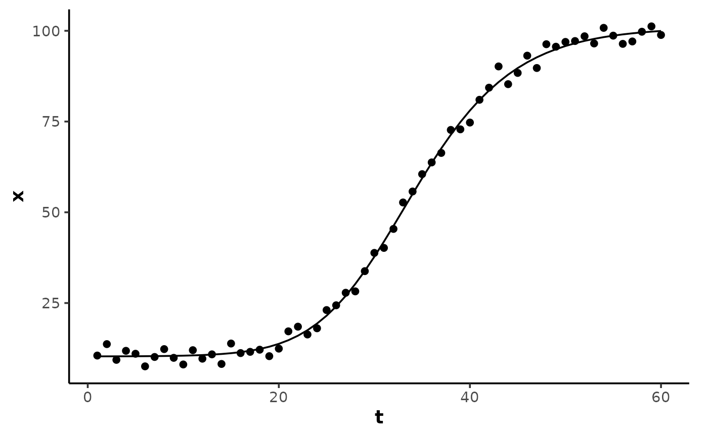

Calculate a 4- or 5-parameter logistic (sigmoidal) curve. The 4-parameter
symmetric form is fit by analyse_kinetics() with method = "sigmoidal"
and shape = "symmetric" (default), and by stats::nls() via the
self-starting wrapper SSlogistic().
Arguments
- t
A numeric vector of the predictor variable (time).
- A
A numeric parameter for the starting asymptote of the response variable.
- B
A numeric parameter for the ending asymptote of the response variable.
- xmid
A numeric parameter for the time at the inflection point (the steepest point) of the curve, in units of the predictor variable
t.- slope
A numeric parameter for the response rate
dx/dtat the inflectionxmid.- asym
A numeric parameter for the asymmetry index of the curve; the fraction of the amplitude
(y(xmid) - A) / (B - A)at which the inflectionxmidoccurs, in(0, 1).asym = 0.5is symmetric and equivalent to the 4-parameter form. IfNULL(default), a symmetric 4-parameter model is used.
Details
The 5-parameter Richards form is exported for advanced use directly with
stats::nls() but is not used by analyse_kinetics() due to convergence
instability. For asymmetric responses, prefer gompertz() /
gompertz_left(), which are more stable.
Model equations
Both forms are re-parameterised from the Richards generalised logistic
model so xmid is the time at inflection and slope is the response rate
dx/dt at the inflection.
4-parameter (symmetric):
A + (B - A) / (1 + exp(-4 * slope * (t - xmid) / (B - A)))5-parameter (asymmetric):
A + (B - A) / (1 + exp(-k * (t - xmid)))^(1 / v)withv = -log(2) / log(asym)andk = 2 * slope * v / ((B - A) * asym).
The inflection is at t = xmid with dx/dt = slope and
y(xmid) = A + (B - A) * asym for any asym in (0, 1):
asym = 0.5(v = 1) collapses to the 4-parameter form.asym -> 0gives an early-acceleration curve (inflection nearA).asym -> 1gives a late-acceleration curve (inflection nearB).asym = 0.368(1/e) approximates a right-inflectiongompertz()curve.asym = 0.632(1 - 1/e) approximates a left-inflectiongompertz_left()curve.
Examples
## create an asymmetric logistic curve with random noise
set.seed(15)
t <- 1:60
x <- logistic(t, A = 10, B = 100, xmid = 30, slope = 4, asym = 0.3) +
rnorm(length(t), 0, 2)
data <- data.frame(t, x)
## 5-parameter fit with the self-starting wrapper
model <- nls(x ~ SSlogistic(t, A, B, xmid, slope, asym), data = data)
summary(model)
#>
#> Formula: x ~ SSlogistic(t, A, B, xmid, slope, asym)
#>
#> Parameters:
#> Estimate Std. Error t value Pr(>|t|)
#> A 10.2987 0.5316 19.372 < 2e-16 ***
#> B 100.9565 0.9135 110.519 < 2e-16 ***
#> xmid 29.3426 2.5692 11.421 3.87e-16 ***
#> slope 3.8707 0.6245 6.198 7.69e-08 ***
#> asym 0.2743 0.1115 2.460 0.017 *
#> ---
#> Signif. codes: 0 ‘***’ 0.001 ‘**’ 0.01 ‘*’ 0.05 ‘.’ 0.1 ‘ ’ 1
#>
#> Residual standard error: 1.827 on 55 degrees of freedom
#>
#> Number of iterations to convergence: 5
#> Achieved convergence tolerance: 1.468e-06
#>
y <- predict(model, data)
# \donttest{
if (requireNamespace("ggplot2", quietly = TRUE)) {
ggplot2::ggplot(data, ggplot2::aes(t, x)) +
theme_mnirs() +
ggplot2::geom_point() +
ggplot2::geom_line(ggplot2::aes(y = y))
}

# }